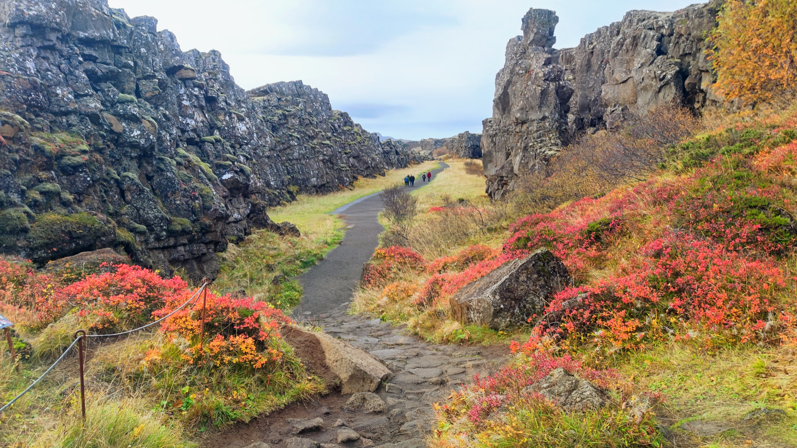

Día 2
Parque nacional Thingvellir
Dentro de este parque nacional existen diferentes rutas. Las principales son las que llevan al lago y a la cascada Oxararfoss, la primera que vemos en el viaje. Ubicación
Una de las visitas imprescindibles en Thingvellir son las fisuras provocadas por el movimiento de las placas tectónicas, que se separan una media de un centímetro anual. De esta manera, es posible caminar por la grieta Almannagjá y fascinarse con las enormes paredes naturales que parecen encerrar al visitante.
Oxararfoss

Camino hacia el lago Thingvallavatn
Cascada Brúarárfoss
El color del agua es azul celeste. Hay que caminar unos 5 min desde el parking, que es de pago. Ubicación.
Bruarfoss significa "Cascada del Puente". Es una cascada relativamente pequeña, pero su diminuto tamaño no le resta su asombrosa belleza. Tanto los lugareños como los viajeros experimentados consideran Bruarfoss una de las joyas ocultas del país, a menudo nombrada comola cascada más azul de Islandia.
Según la leyenda, este puente de piedra natural fue destruido en 1602 por un súbdito de la sede episcopal de Skalholt. En aquella época, Islandia sufría una grave hambruna y, al destruir el puente, el súbdito impidió que los hambrientos campesinos llegaran a las abundantes tierras reclamadas por la Iglesia.
Desde entonces, hay que dejar el coche en un aparcamiento junto a la carretera 37 y recorrer los 3.500 metros de un sendero que avanza hacia el norte, más o menos paralelo a la orilla izquierda del río Brúará. En cualquier caso, es un camino generalmente cómodo, que permite disfrutar de la hermosa naturaleza del lugar.
Además, Brúarfoss no está sola. Aproximadamente a mitad de camino, nos encontraremos con Hlauptungufoss, una cascada de dos metros de altura que, en cierto modo, es su antítesis. El río se encajona en un pequeño barranco de tal forma que, a pesar de su reducido caudal, crea múltiples remolinos y turbulencias, mientras sus aguas rugen con fuerza.
Otros quinientos metros aguas arriba nos llevarán a Midfoss, otro pequeño salto, en el que el Brúará se divide en dos brazos. Es otra cascada pequeña, de poco más de un metro de altura, tras la cual las aguas del río se remansan en una charca de color turquesa.
Pese a su modesto tamaño, Brúarfoss es una de las cascada favoritas de los fotógrafos de paisaje de Islandia. Los innumerables saltos de agua ofrecen un abanico de composiciones casi ilimitado. Además, es una cascada relativamente cómoda, a la que se llega fácilmente y que no tiene tantos niveles de masificación como otras más famosas.
Cráter de Kerið
Montaña con cráter relleno con agua. Se puede rodear por arriba, pero también se puede bajar y rodear el lago. Entrada de pago. Ubicación.
El cráter, ubicado en una región volcánica conocida como Tjarnarhólar, fue formado hace 6500 años, lo cual lo convierte en un paisaje volcánico relativamente joven.
Resulta realmente sorprendente tanto al rodear el cráter como al bajar por él el intenso contraste de colores que genera el azul turquesa del lago y el color rojizo y verdoso de la tierra y musgo de las paredes del cráter.
Gracias a los senderos adaptados al turismo, es posible descender hasta el lago del cráter Kerid, que llega a alcanzar los 14 metros de profundidad.